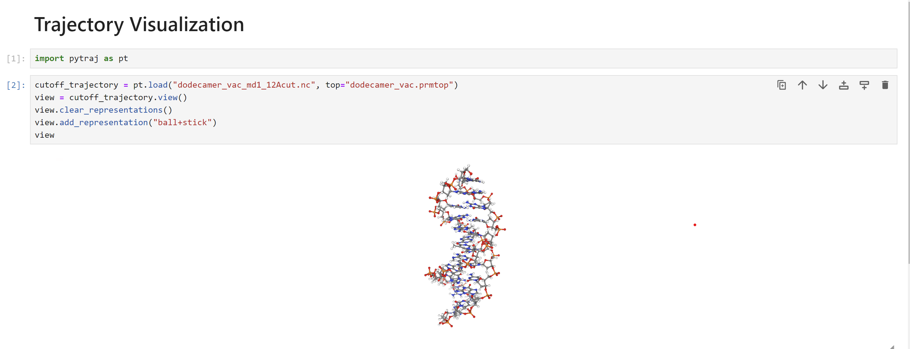

Visualizing the trajectories with Python¶
Trajectories can be visualized in JupyterLab using Python libraries like nglview or 3dmoljs. This tutorial will show how to visualize Amber trajectories using NGLView.
In order to do this visualization, you must have both NGLView and Jupyter Lab installed.
If using the conda package manager, you can install these with the command below:
conda install -c conda-forge jupyterlab nglivew
Once you have the packages installed, you can open JupyterLab by typing jupyter lab into your terminal.
We will be using the Python interface to cpptraj, pytraj, to load and visualize our trajectories.
In Jupyter Lab, type the following into a cell
import pytraj as pt
cutoff_trajectory = pt.load("dodecamer_vac_md1_12Acut.nc", top="dodecamer_vac.prmtop")
view = cutoff_trajectory.view()
view.clear_representations()
view.add_representation("ball+stick")
view
In this code block, we have imported the Python package pytraj.
We then used the load function in Pytraj to load in our trajectory file dodecamer_vac_md1_12Acut.nc.
You will see something similar to the following:
If you hover your mouse over the molecule, you will see a menu to play the trajectory in the lower left.
Repeat the analysis in the next cell for the system with no cut-off. Have a look at the trajectory, the difference from the last simulation should be obvious. The instability of the DNA dimer is clear.
no_cutoff_trajectory = pt.load("dodecamer_vac_md1_nocut.nc", top="dodecamer_vac.prmtop")
view = no_cutoff_trajectory.view()
view.clear_representations()
view.add_representation("ball+stick")
view
So, which simulation is the correct one? Well, since this simulation was in vacuo and we had no neutralizing ions the conditions did not really represent laboratory conditions. Indeed in this “harsh” environment, with no clustered water or ions, it is likely that the DNA dodecamer is going to be unstable and so the behavior shown by our no cut off simulation is most likely the closest to reality.
The take home lesson here is that you should think very carefully about what you are simulating. Are you really simulating realistic conditions? How are the parameters you have chosen biasing your results? A cutoff can be a good way to increase the speed of a simulation, but you need to be aware that it can introduce very large artifacts into your simulation. So, think very carefully, and try out several scenarios before you try to reach firm conclusions.
One way to improve considerably on our in vacuo simulations is to make our physical model of DNA much closer to reality, i.e. include explicit neutralizing ions and also to include solvent effects, either implicitly within our model or via the use ofexplicit solvent. This is the subject of the next two stages of our tutorial here.